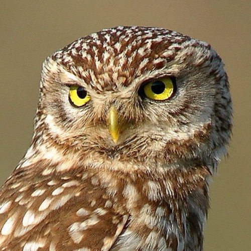
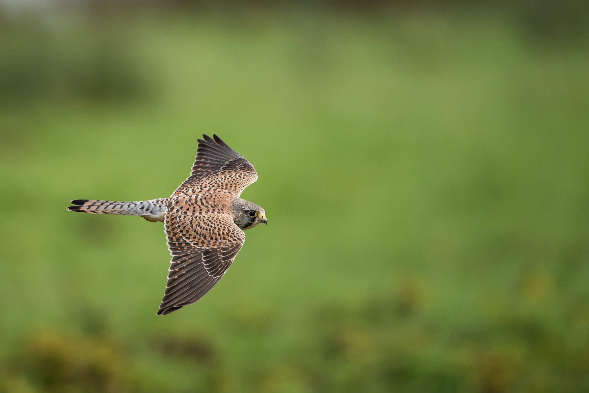
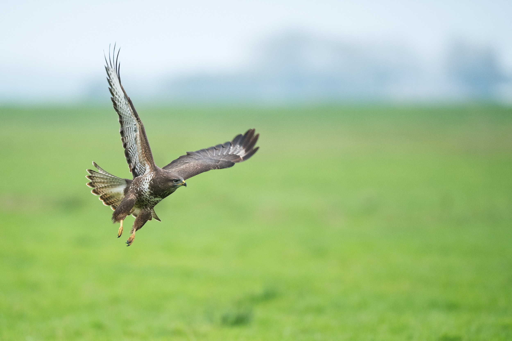

| Wikimedia images | |
|---|---|
| Andy Morffew, Goshawk, CC BY 2.0* | |

| Superbass, Turmfalke kasselburg, CC BY-SA 4.0* |

| Rolf Tuinstra, Common Buzzard, CC BY-SA 4.0* |
| Afsarnayakkan, Black Kite, CC BY-SA 3.0* | |
|  | Trebol-a, Little Owl, CC BY-SA 3.0* |
| Diego Delso, Long-eared owl, CC BY-SA 4.0* | |
| Frank Schulenburg, Corvus corax, CC BY-SA 4.0* | |
| *Image cropped by Olha H. | |
| Unsplash images | |
|---|---|
|  | Photo by Vincent van Zalinge |
| Photo by Hans Veth | |
|  | Photo by Vincent van Zalinge |
| Photo by Andy Chilton | |
| Photo by Zdeněk Macháček | |
| Photo by Ted van den Bergh | |
| Photo by Vincent van Zalinge |